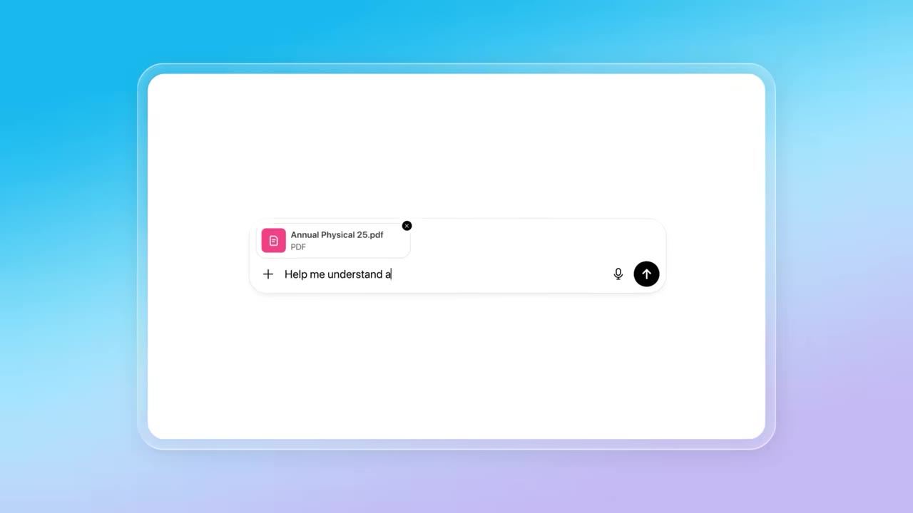
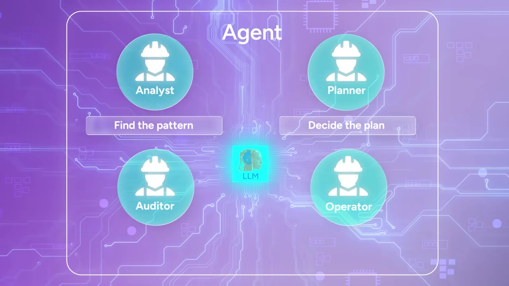

AI agents aren't just better chatbots. The gap between those who understand the difference and those who don't is about to get very expensive.
Watch on YouTubeThe internet gave us search, so we started googling. AI gave us LLMs, but most people still think of AI as a glorified search engine. Agents are here and we're making the same mistake again.

The simplest way to think about it: if a task is autonomous, recurring, and reviewable — the ARR framework — it's a strong candidate for an agent. If it needs live judgment, only happens once, or can't be reviewed clearly, use a prompt.
Prompting is like sitting next to a student driver. You still have to guide them, correct them, and stay very alert. An agent, on the other hand, is a hired driver.— Speaker
A chatbot predicts the next word. An agent decides the next action. Inside the agent, four workers orbit one LLM:

You didn't write the report. You didn't analyze it. You just assigned the job of four people to one agent.— Speaker
In the 1970s, Air Force Colonel John Boyd studied why American F-86 pilots kept beating technically superior Soviet MiGs in the Korean War. The answer was speed of adaptation: Boyd's OODA loop — Observe, Orient, Decide, Act.
An automated workflow is designed to be obedient — it breaks when things go wrong. An agent sees what's broken, finds substitutes, adjusts, and rebuilds the entire plan. A workflow can follow the process. An agent can reroute it completely.
When someone says they built an agent, ask one question: when the first path breaks, does the agent keep following the script, or can it find a better path?— Speaker
Agents are not magic. They're a multiplier. An agent is just a mirror — it reflects the quality of your thinking back at you. It just amplifies it.
An agent doesn't fix bad thinking. It formalizes it.— Speaker
The winners who can wield AI agents won't just be engineers — they'll be people who understand their work deeply enough to define it precisely. If clarity is the bottleneck, the opportunity is not broad intelligence. It's narrow ownership.
Every software company that exists today will have an agent company trying to dethrone it. The winners won't build the broadest agents first. They'll build the one that understands one workflow, one market, and one kind of user pain better than everyone else.
The most valuable person is no longer the one who can think the fastest. It's the one who can define good work, spot bad work, and know when to trust an agent — and when to trust a human.— Speaker